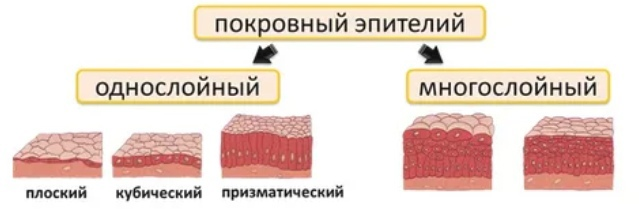
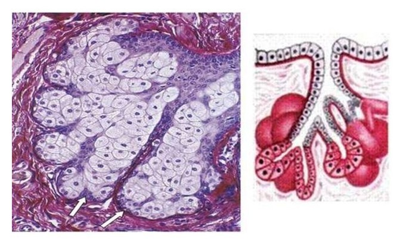

Ткани человека
Ткань - это группа клеток и межклеточного вещества, которые имеют общее происхождение и развитие, сходное строение и выполняют в организме определенную функцию.
Строение тканей и их выполняемые ими функции взаимосвязаны. Поэтому ткани отличаются высокой специфичностью.

.jpg)
Эпителиальная ткань
Особенности:
- Находится на внешних поверхностях органов (кожа) или облицовывает внутренние (кишечник).
- Клетки располагаются на базальной мембране (своеобразной пленке, на которой находятся клетки).
- Клетки расположены очень близко друг к другу.
- Клетки объединяются в слои.
- Межклеточное вещество в минимальном количестве.
- Быстрое отмирание клеток.
- Высокая способность к регенерации.
- Клетки называются эпителиоцитами.
- Клетки разделяются на покровные и железистые.
- Покровные могут быть однослойными и многослойными.
- Клетки могут иметь реснички или микроворсинки.
- Происхождение из эктодермы (большей частью).
- Связан с соединительной тканью.
- Не имеет кровеносных сосудов.
- Дыхание и питание происходят через соединительную ткань.
- Сторона клетки, обращенная к базальной мембране, отличается от стороны, обращенной наружу.
Функции:
- Барьерная и защитная функции: предотвращает обезвоживание и обеспечивает механическую защиту.
- Дыхательная: органы дыхания состоят из эпителиальной ткани.
- Секреторная: железы производят секрет, например, желудок вырабатывает соляную кислоту.
- Регуляторная/эндокринная: синтезируют и выделяют гормоны.
- Выделительная: потовые железы удаляют ионы, воду, мочевину.
- Абсорбционная: в кишечнике происходит всасывание веществ.
- Синтез витамина D: эпидермис кожи.
- Синтез меланина: защита от ультрафиолетового излучения солнца.

Эпителий бывает:
1. Покровный (образует покровы тела, выстилает сосуды, слизистые оболочки)
а) Однослойный - все клетки соединены с базальной мембраной.
б) Многослойный - с базальной мембраной соединён только базальный слой.
1. Покровный (образует покровы тела, выстилает сосуды, слизистые оболочки)
а) Однослойный - все клетки соединены с базальной мембраной.
б) Многослойный - с базальной мембраной соединён только базальный слой.

2. Железистый (выделяет гормоны/секреты):
внутренняя секреция — гормоны в кровь (без протоков);
внешняя секреция — по протокам, вывод секрета наружу (пот) или в полости органов (кишки).
внутренняя секреция — гормоны в кровь (без протоков);
внешняя секреция — по протокам, вывод секрета наружу (пот) или в полости органов (кишки).